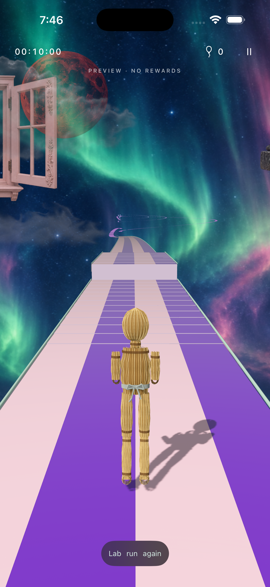
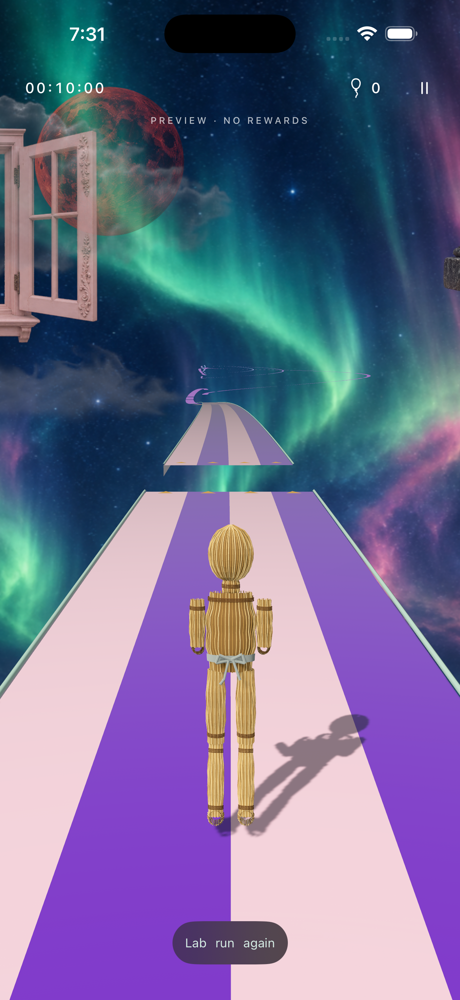
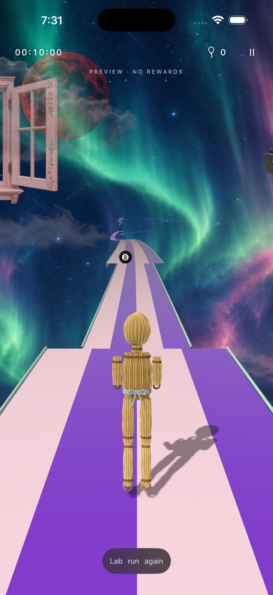
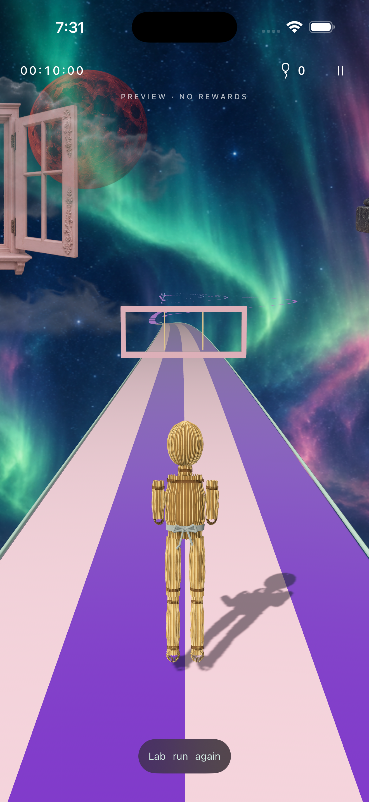
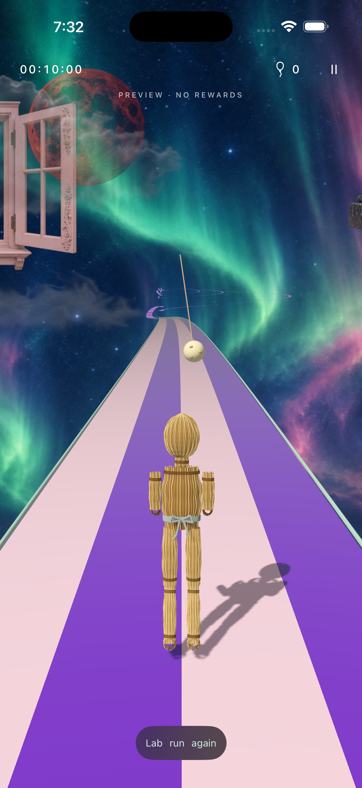
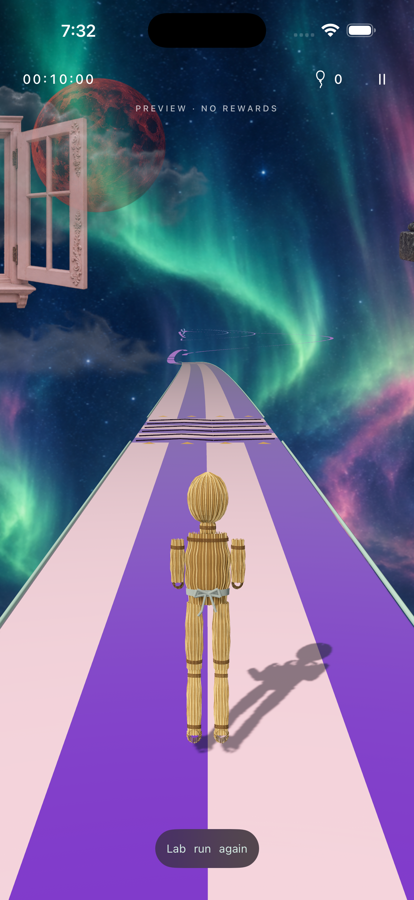
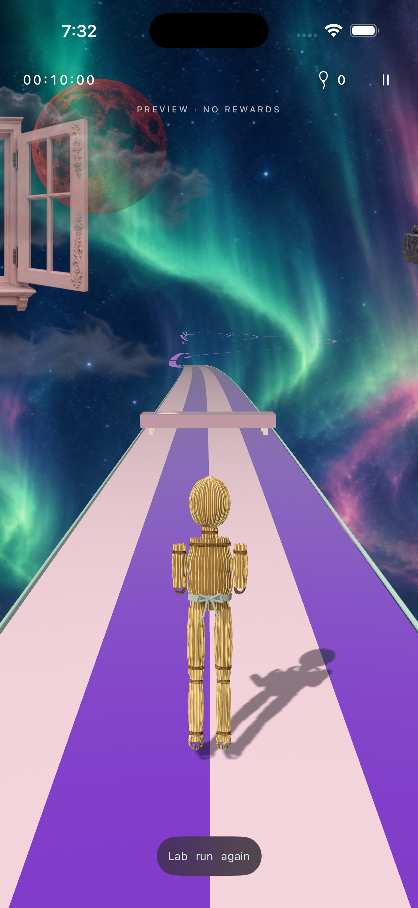
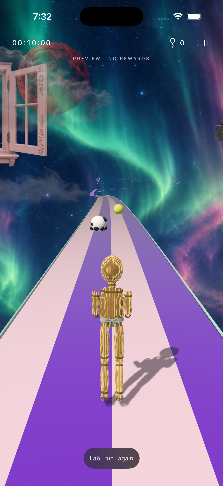
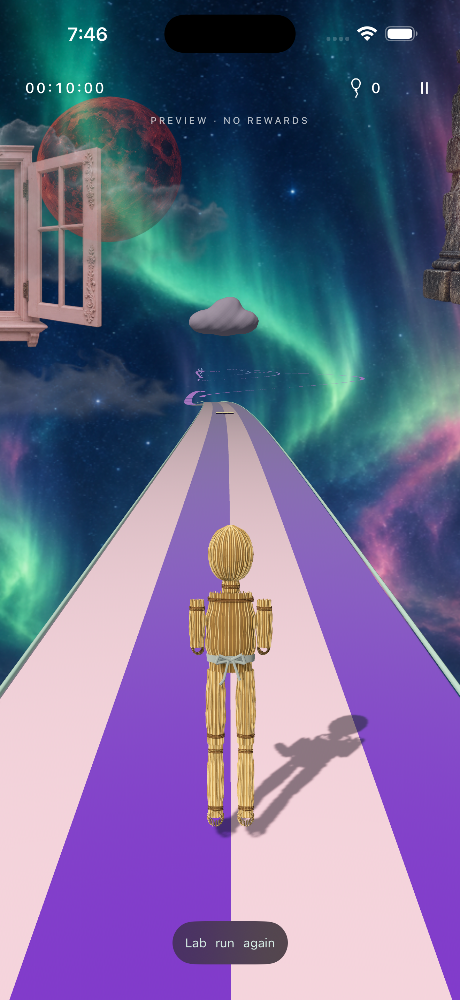
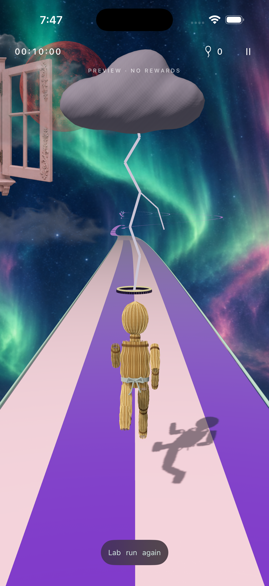

Actual iPhone 16 Pro Max / iOS 26.5 Simulator captures. Isolated DEBUG previews use real route geometry and collision rules. Each can be run, frozen and replayed in the Lab. These are still images; timing and collision evidence is in the automated test log, not inferred from screenshots.









